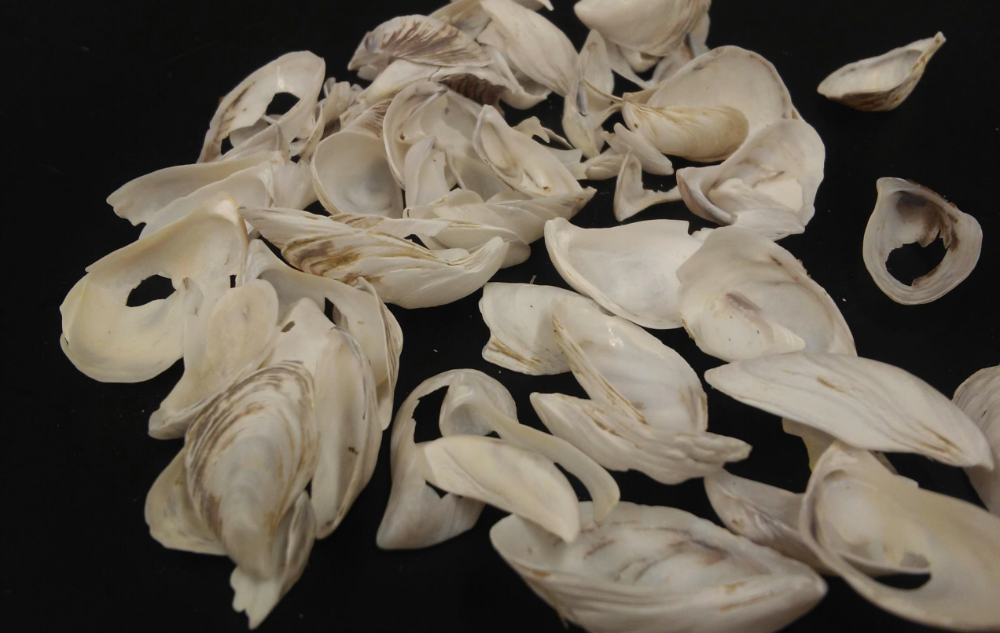
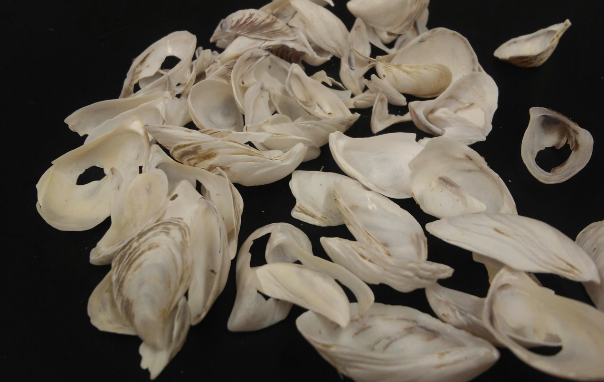

Electron Paramagnetic Resonance for Radiation Detection
The Radiation Dose Response of Mollusc Shells from the Great Lakes
M. Tzivaki
 
The EPR spectra and dose response of one endemic and one invasive species of bivalve mollusks, eastern elliptio (Elliptio complanata) and zebra mussel (Dreissena polymorpha) are studied with the intention of determining their usefulness as indicators of radioactive material contamination in the environment. After irradiation the Eastern elliptio shells show a composite spectrum with overlapping signals, and while it may be used for identifying the specimens, it is inaccurate for dose estimation. Zebra mussels have a strong EPR signal, even when unirradiated, that can be measured and used for determining the dose response. For zebra mussels the larger grain sizes showed a larger deviation of signal height measurements which was attributed to a greater variance in packing densities. The optimal grain size for measurements of zebra mussels was determined to be between 0.1 mm and 0.5 mm.
Cs-137 Beam Profile Mapping with Alanine Powder
A. Hassan
A research experiment was implemented to develop a visual representation of a beam profile using alanine powder as dosimeters. Electron Paramagnetic Resonance (EPR) was used to measure irradiated alanine samples using a Cs-137 source. Four different experiments were conducted with the alanine samples at 24cm and 34cm, with various aluminum shielding thicknesses, from the source to achieve a compacted beam profile of the Cs-137 source used at UOIT.